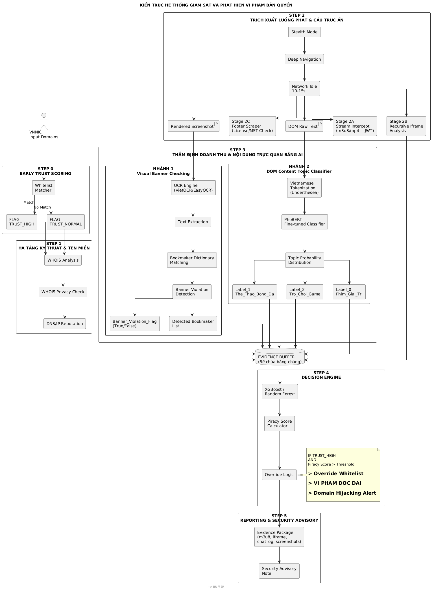
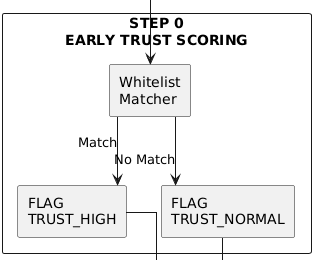
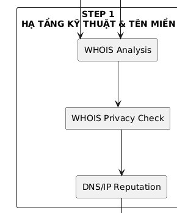
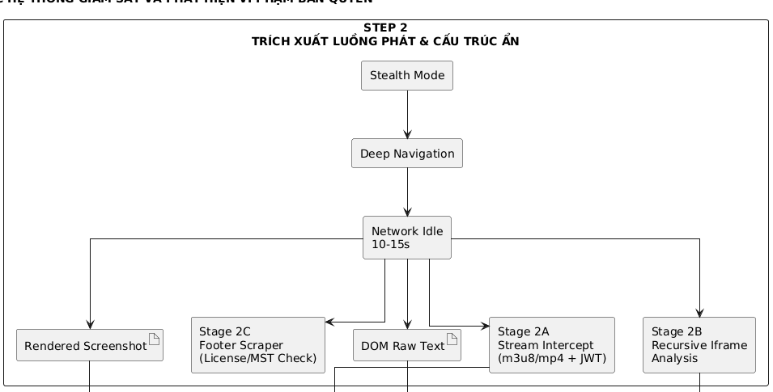
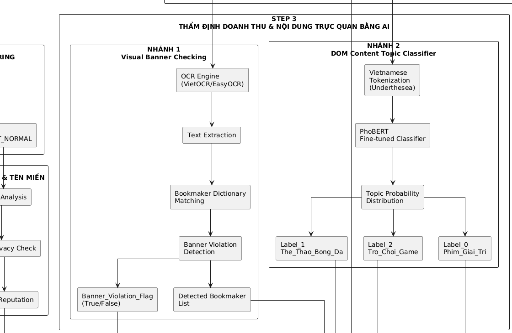
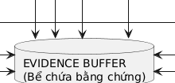
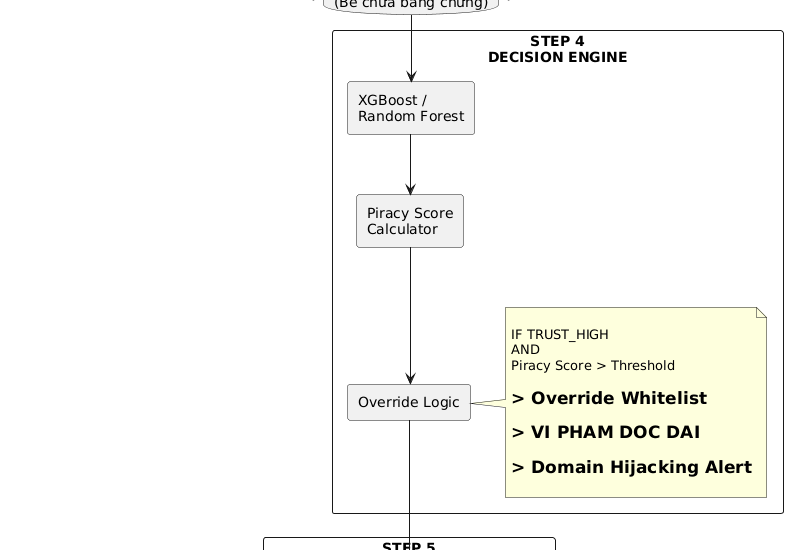
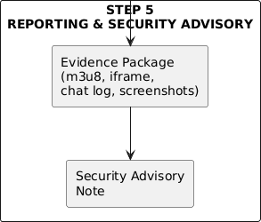

Quy trình xử lý khép kín từ khâu tiếp nhận Domain đầu vào đến đưa ra Quyết định & Báo cáo



So sánh dữ liệu thực tế thu thập từ hệ thống chứng minh độ chính xác của chỉ số


Phân tích lựa chọn kiến trúc để tối ưu hóa hiệu năng và độ ổn định của hệ thống
| Tiêu chí so sánh | Mô hình dựa trên OCR (Lựa chọn hiện tại) | Mô hình dựa trên YOLO (Object Detection) |
|---|---|---|
| Dữ liệu huấn luyện | Không yêu cầu (Sử dụng thư viện OCR có sẵn) | Cần bộ dữ liệu rất lớn và gán nhãn banner |
| Cập nhật thương hiệu mới | Cực kỳ dễ dàng (Chỉ cần thêm từ khóa vào từ điển) | Phải huấn luyện lại toàn bộ mô hình (Retrain) |
| Tài nguyên hệ thống | Nhẹ, chạy nhanh trên CPU thông thường | Nặng, yêu cầu phần cứng GPU để đạt thời gian thực |
| Độ nhiễu quảng cáo | Nhạy cảm với phông chữ nghệ thuật cách điệu | Nhận diện tốt logo thương hiệu bất kể biến thể chữ |



Q&A: Thảo luận về kiến trúc & giải pháp triển khai thực tế